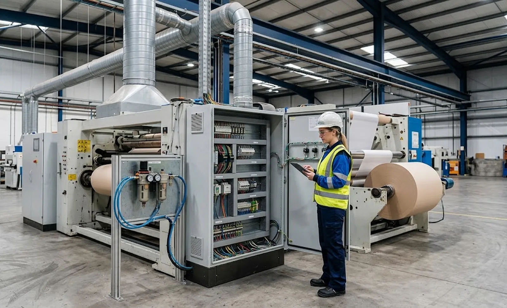
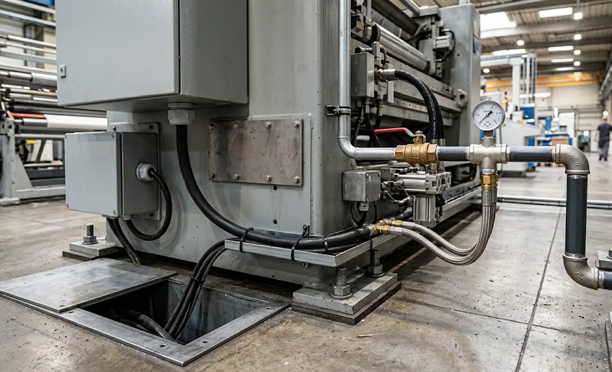

Published October 2, 2026 | By HDPTH Technical Editorial Team

Utility planning is the least glamorous part of a slitter rewinder purchase and one of the most common causes of a delayed start-up. Machines arrive on schedule, then wait: the compressor starves under the added demand, the transformer cannot carry the inrush, the exhaust duct was never budgeted, or the open floor proves too narrow once cabinet doors must open. Pair this guide with the site preparation checklist and the project schedule guide to sequence the work.
Electrical supply: installed power is not consumption
The datasheet figure buyers most often misuse is installed power — the sum of all motors, heaters and drives. A mid-size slitter rewinder typically carries an installed power in the tens of kilowatts, but actual running draw is much lower, because drives consume according to tension, speed and acceleration and motors are not all loaded at once. For supply sizing, work from three numbers: installed power with your options, peak inrush, and typical running load at your speed — a curve a competent vendor can supply. Then check the quality side: voltage and frequency tolerance, harmonics compatibility, and voltage-dip sensitivity on a weak grid. Confirm IEC or UL alignment early, as covered in our electrical standards guide, because it affects cabinet approval in your jurisdiction.
Compressed air: pressure, dew point and duty cycle
Compressed air drives the clutches and brakes, air shafts, actuators, lay-on rolls, threading and cleaning nozzles. Vendors state a pressure requirement — commonly six to eight bar at the inlet — and a consumption figure; the sizing mistake is reading the peak as continuous demand. Ask for consumption at duty cycle, then verify your compressor house can supply that increment at the machine location, including ring-main losses. Quality matters as much as quantity: wet or undersized air is the most frequent root cause of pneumatic faults, so specify dry, filtered air with a climate-appropriate dew point, and include a local receiver if the supply run is long. If your line uses vacuum for threading or trim handling, that pump load needs its own line in the budget.
| Utility | What to size | Vendor document to request |
|---|---|---|
| Electrical | Installed power, inrush, running-load curve, voltage tolerance | Utilities summary + single-line diagram |
| Compressed air | Pressure at inlet, consumption at duty cycle, dew point, filtration grade | Pneumatic connection drawing with pipe sizing |
| Exhaust / dust extraction | Air volume per connection, static pressure, duct positions and diameters | Exhaust points drawing with airflow figures |
| Water / cooling | Flow, temperature, quality (drives, ultrasonic units) | Cooling circuit datasheet |
| Floor space | Footprint + swing, maintenance, operator and logistics clearances | Layout drawing with clearance dimensions |
Exhaust and dust extraction: ducting that must be budgeted early
Shear and score slitting generate dust that a dust extraction system must capture at the slitting section. The machine defines air volumes, static pressures and duct positions; your building must route those ducts to a filter unit you may not yet own. Buyers who treat extraction as a “later” item pay twice: rework to route ducts after the machine is set, and acceptance arguments when edge-quality trials fail because dust settles back onto the web. Require the exhaust points drawing with airflow figures in the quotation, and cost filter unit, ducting and recirculation treatment with the machine. If trim is extracted pneumatically, that airflow belongs in the same calculation.
Floor space: the footprint is only the beginning
The layout drawing shows the machine outline; real planning adds everything around it. Plan for roll swing diameters at maximum size, shaft and core extraction clearance, operator access on both sides, the threading path and cabinet-opening space — a door that cannot open is a fault that cannot be fixed. Include the roll unloading system, pallet staging for finished rolls, upstream staging for the line material flow, and safety clearances and escape routes required by local regulation.

Putting utilities into the contract
Make the utilities specification contractual. Require the vendor to deliver with the quotation: a utilities summary with quantity, quality and connection point per supply; a preliminary layout with clearances; the exhaust points drawing; and ambient condition requirements — the temperature and humidity ranges the machine is specified for, critical for nonwovens and adhesives. Update these to as-built status at delivery so your commissioning team works from real figures. Finally, cross-check the set against your plant capacity and budget any upgrades — transformer, compressor, filter unit, flooring — as project line items, visible to management before the order. Done routinely, this finds utility upgrades costing a fraction of what the same discoveries cost during a delayed start-up.
Planning a new slitter rewinder installation?
HDPTH supplies utility specification packages with every quotation: power, compressed air, exhaust, water and layout drawings with clearances, plus support for your site preparation. Send your plant conditions and requirements for a full utilities plan.
Request a Utilities SpecificationQuestions to put to every vendor
- Will you provide a written utilities summary — electrical, pneumatic, exhaust, water — with quantity, quality and connection points for our machine?
- Can you supply a running-load curve at our production speed, not just the installed power figure?
- What are the exhaust air volumes and duct positions, and do you supply or specify the filter unit?
- Will the layout drawing show roll swing, maintenance and operator clearances, and will the utilities set be updated to as-built at delivery?
Frequently asked questions
What utilities does a slitter rewinder need?
The core set is: an electrical supply of the specified voltage, frequency and quality feeding the main cabinet; compressed air at the stated pressure and dew point for actuators, clutches, brakes, threading and air shafts; exhaust connections where the slitting method produces dust; and, on some builds, water cooling and vacuum. Each utility has a defined quantity, quality and connection point — all three belong in the purchase specification.
How much electrical power does a slitter rewinder consume?
Installed power — the sum of all motors and heaters on the datasheet — is not consumption. A typical mid-size slitter rewinder has an installed power of tens of kilowatts; actual running draw is far lower, because drives draw according to tension, speed and acceleration. Size the incoming supply for the installed figure plus other equipment on the same feed, ask for a running-load curve at your speed and budget for inrush. Verify voltage tolerance, frequency and harmonics compatibility against your local supply quality, especially on a weak or heavily loaded grid.
What compressed air quality and capacity should I plan for a slitter rewinder?
Most slitter rewinders operate on a standard industrial air supply — commonly six to eight bar at the inlet — sized from the vendor’s stated consumption, driven by clutches and brakes, air shafts, actuators, threading and cleaning devices. Plan for dry, filtered air with a dew point appropriate to your climate: moisture in air shafts and valves is a leading cause of pneumatic downtime in humid regions. Include a local receiver if the ring main is long, and budget consumption at duty cycle rather than the peak figure.
Why is floor space planning more than the machine footprint?
The footprint in the datasheet is the machine outline at rest. Real space needs include roll swing diameters, shaft extraction clearance, operator access on both sides, the threading path, cabinet-opening maintenance space, knife-changing service access, roll handling equipment and escape routes required by local regulations. Add space for staging raw and finished rolls — often more floor than the machine itself — and reserve headroom for cranes if rolls are heavy.
Which utility documents should I request from the machine vendor before ordering?
Request, in writing: a utilities summary sheet listing each supply with quantity, quality, connection point and recommended cable or pipe sizing; a preliminary layout drawing with footprint, maintenance and swing clearances; the installed power breakdown; the exhaust air volumes and duct positions; and the ambient condition requirements. These documents should be contract deliverables updated to as-built status at delivery, so installation and site preparation can proceed in parallel.
Sources
- IEC 60204-1: Electrical equipment of machines — supply characteristics and connection requirements
- ISO 8573-1: Compressed air — contaminants and purity classes for specifying air quality
- EU Machinery Regulation (EU) 2023/1230: manufacturer information on installation and space requirements
- OSHA 1910.94: ventilation requirements relevant to dust extraction planning